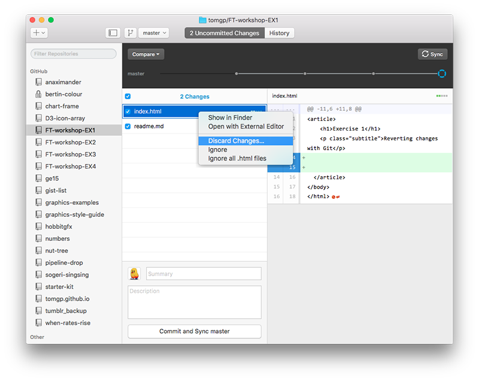

First exercise for a D3 workshop running at the Financial Times
One of the immediate benefits of using source control is that it can increase your confidence in (and so your likelihood of) making changes and improvements to existing code. This can help you write better more flexible code and help fight bad habits like commenting out large chunks of code and keeping code that is no longer used in your files which may confuse you later.
Before we start you'll need a local repository to work through the steps on your computer. If you have the GitHub desktop client installed on your computer it should be simply a question of either..
This is the most common case: You've made some changes and broken something, you haven't commited the changes to your repository and just want to get back to when things were working 5 minutes ago.
Here's how you do it.
First make some changes, some BAD changes. Go into index.html in the repo you just made, change a bunch of stuff and save the file. Oh no, let's fix this terrible mess!
The main panel on the GitHub desktop client can show one of two things 'Uncomitted Changes' or 'History'. Make sure you're looking at uncomitted changes. That fine mess you just made should be shown on the right and the name of the file in which you made it on the left right-click (or cmd-click if you prefer) on the file name and select 'Discard Changes...'

You'll then be asked to confirm you want to discard your chages
Are you sure you want to discard all changes to "index.html"?
Yes, you are!
Now if you go back into your editor you'll see the file is in it's nice un-ruined original condition.
Although we'll be using the GitHub client you can do similar thinsg with the command line or other UIs like SourceTree